钓鱼、图鉴与捕虫
75 种鱼与奇物的收集图鉴、十大生态钓区、诱饵与连击、钓鱼大赛；还有 24 种昆虫的捕虫图鉴
钓鱼怎么玩
拿普通钓竿在水边甩杆就行。和原版不同的是：
- 咬钩时水下会出现鱼影绕着浮漂游，收杆时鱼按真实尺寸跃出水面飞向你。
- 每条鱼都有尺寸（cm）和星级（★ / ★★ 银星 / ★★★ 金星 / 👑 鱼王）。
- 除了全水域通用的鱼，其他鱼只在对应群系 / 地形的水域才能钓到，见下方十大钓区。
- 天气、昼夜、季节都会影响概率，例如春季樱花锦鲤 ×2、秋季红鲑和大闸蟹更多、冬季冰原鱼 ×2。
想去钓鱼：/spawn fish 直接传送到主城茶屋东岸栈道（樱花林 / 主城钓区）。
指令
| 指令 | 说明 |
|---|---|
/fish | 打开分页图鉴（4 页 / 75 种）。每条鱼都写了去哪钓、水域条件、季节、时间天气、推荐诱饵，以及你现在站的位置能不能钓到 |
/fish zone | 查你脚下属于哪个钓区、这里能钓到哪些鱼 |
/fish top | 全服各鱼种的尺寸纪录榜 |
/fish museum | 传送到主城鱼王博物馆，看 32 座纪录展柜（next / prev / 1–3 切换展厅）。每天第一次去参观打卡送 25 茶屋币 + 15 经验 |
/fish contest | 看下一场钓鱼大赛的倒计时和实时榜首；/fish contest info 看规则 |

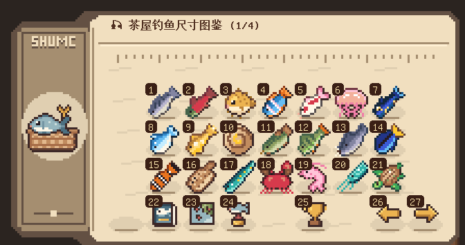

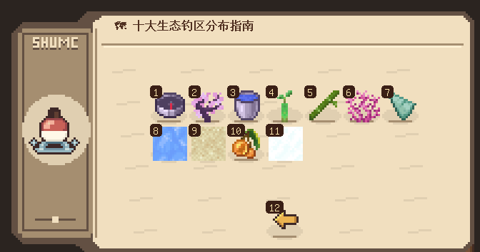
诱饵、连击与放生
副手诱饵
副手拿着下面的原版材料就会自动生效，每次上钩消耗 1 个。渔具行（/npcshop tackle）有卖。
| 诱饵 | 吸引 |
|---|---|
| 樱花花瓣 / 樱花树叶 | 樱花林鱼、高山云海雪鲤 / 仙鹤羽鱼、落水鼠鼠玩偶 |
| 荧光墨囊 / 发光浆果 | 深海夜鱼、全部地下溶洞 / 深暗鱼类、发光珍珠贝（+2% 尺寸） |
| 甜浆果 / 蜂蜜瓶 | 暖海、丛林观赏鱼、沙漠幻彩鱼、漂流奇物（+4% 尺寸） |
| 生鳕鱼 / 生鲑鱼 | 河流 / 沼泽 / 深海 / 极地 / 沙漠的掠食巨鱼、大闸蟹（+5% 尺寸） |
捕虫网抓到的活虫也能当鱼饵，见下方 捕虫。
连击与放生
- 连续成功上钩累积 🔥 连击，尺寸最高 +12%；每 10 连击送 5 茶屋币和 10 经验。
- 手持钓到的东西对着水面 Shift + 右键可以放生 / 环保回收，领一点茶屋币补贴和经验。
- 偶尔会捞起漂流宝箱，里面有茶屋币和小礼物。
卖鱼价
鱼按星级定底价，再乘尺寸系数和长度系数（越大越值钱），用 /sell 出货：
| 星级 | ★ | ★★ 银星 | ★★★ 金星 | 👑 鱼王 |
|---|---|---|---|---|
| 底价 | 6 币 | 14 币 | 32 币 | 90 币 |
鱼和其他玩法一样受每日额度影响（见 经济）。垂钓客专精星级鱼出货 +20%。
图鉴里程碑
| 收集 | 奖励 |
|---|---|
| 5 / 75 | 150 茶屋币 + 饵钓 II 附魔书 |
| 15 / 75 | 300 茶屋币 + 海之眷顾 III 附魔书 + 金苹果 ×2 |
| 25 / 75 | 500 茶屋币 + 经验修补 I 附魔书 + 绿宝石 ×8 |
| 32 / 75 |  传奇钓竿 + 800 茶屋币 传奇钓竿 + 800 茶屋币 |
| 50 / 75 | 1000 茶屋币 + 绿宝石 ×16 + 金苹果 ×3 |
| 75 / 75 | 2000 茶屋币 + 附魔金苹果 ×2 + 钻石 ×12，全服播报【四海鱼圣】 |
钓鱼大赛
每天 13:00、20:30（北京时间）各一场，每场 8 分钟
至少 2 人在线才开，开赛前 5 分钟会预告。比谁钓的鱼最大：前三名 200 / 120 / 80 茶屋币（冠军加金苹果）；没进前三但钓满 3 次也有 40 币参与奖。

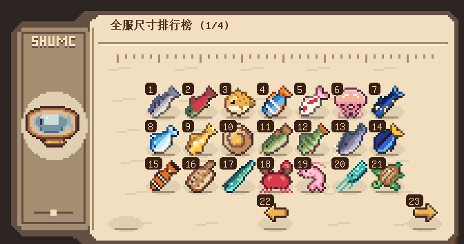
十大钓区与 75 种鱼
67 种鱼 + 8 种「不是鱼」的趣味奇物。站在某个钓区里时，那里的限定鱼咬钩权重还会额外提高。金框的是传说鱼，虚线框是奇物（全水域都能捞到）。
🌊 全水域通用
水域条件：任意主世界水域 · 6 种鱼 + 8 种奇物
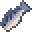
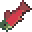
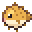
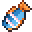
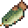
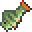
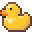
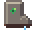
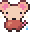
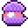
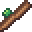
🌸 樱花林 / 茶屋主城
水域条件：樱花林群系，或主城 120 格内水域 · 6 种鱼

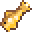
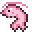
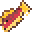
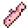
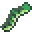
🏞 河流 / 森林溪流
水域条件：河流、平原、草甸、森林、花林、白桦林、黑森林、苍白花园 · 7 种鱼
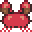
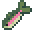
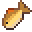
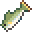
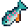
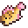
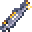
🌿 沼泽 / 红树林
水域条件：沼泽、红树林沼泽 · 6 种鱼
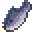
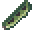
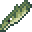
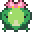
🌴 丛林 / 竹林
水域条件：丛林、稀疏丛林、竹林 · 6 种鱼
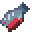
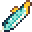
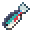
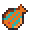
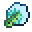
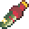
🏖 温暖海洋 / 珊瑚礁 / 海滩
水域条件：暖水海洋、温水海洋、海滩 · 7 种鱼
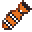
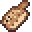
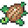
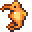
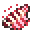
🌊 海洋 / 深海 / 冷水海
水域条件：海洋、深海、冷水海、石岸 · 7 种鱼
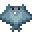
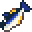
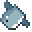
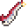
❄ 雪原 / 冻海 / 针叶林
水域条件：雪原、冰刺、冻河、冻海、雪林、针叶林 · 6 种鱼
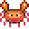
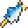
🏜 沙漠绿洲 / 恶地 / 热带草原
水域条件：沙漠、恶地、热带草原的水域 · 6 种鱼
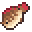
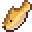
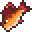
🕳 地下溶洞 / 繁茂洞穴 / 深暗之域
水域条件：洞穴群系、深暗之域、蘑菇岛，或 Y≤48 且无天光的地下水 · 6 种鱼
⛰ 高山云海天池
水域条件：海拔 Y≥95 的水域，或山峰 / 风袭丘陵 Y≥85 · 4 种鱼
捕虫图鉴 /bug
/bug（别名 /捕虫、/昆虫）。拿着捕虫网右键野外的花草或树叶就能捕虫（同一处花草 25 秒内只能搜一次）。不同地形、昼夜出没不同的虫，一共 24 种，抓到一次就点亮；集齐 6 / 12 / 18 / 24 种有茶屋币奖励（第一档 150 币）。
昆虫能 /sell 出货，可以当鱼饵，也能放进 3D 生态瓶摆在家里展示。
捕虫网与展柜
还有 2800 币的 3D 桌面活体鱼缸，可以放任意星级鱼展示。